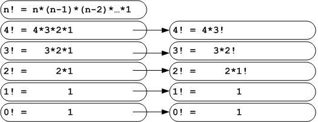
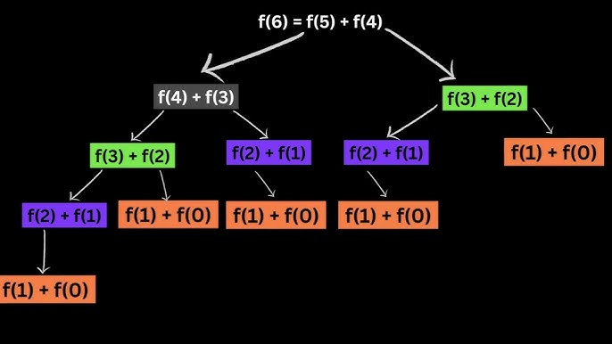

Introducción
En esta página de trabajo se analiza la recursividad, un concepto clave en programación que permite a las funciones llamarse a sí mismas para resolver problemas complejos de manera elegante y estructurada.
Definición de Recursividad
La recursividad es una técnica de programación donde una función se llama a sí misma para resolver un problema. Esto permite dividir problemas complejos en partes más pequeñas y manejables, facilitando su solución.
Es fundamental en computación y programación, ya que ayuda a entender la complejidad de los algoritmos y a desarrollar soluciones más organizadas y eficientes. Se aplica en estructuras de datos, algoritmos matemáticos y muchos otros ámbitos de la tecnología.

Procedimientos Recursivos
La recursividad es una técnica de programación en la que una función se llama a sí misma para resolver un problema. Los procedimientos recursivos son aquellos que utilizan esta técnica. A continuación, se describen sus características y ejemplos.
Características de los Procedimientos Recursivos
- Caso Base: Es la condición que detiene la recursión. Sin un caso base, la función se llamará indefinidamente, lo que puede llevar a un desbordamiento de pila.
- Llamada Recursiva: Es la parte de la función donde se llama a sí misma, generalmente con un argumento modificado que se aproxima al caso base.
- División del Problema: Los procedimientos recursivos suelen dividir un problema grande en subproblemas más pequeños y manejables.
Ejemplo de Procedimiento Recursivo
Un ejemplo clásico de recursión es el cálculo del factorial de un número n (denotado como n!):
n! = { 1 si n = 0
n × (n − 1)! si n > 0
Aquí, el caso base es cuando n = 0, y la llamada recursiva es n × (n − 1)!.
def factorial(n):
if n == 0:
return 1
else:
return n * factorial(n - 1)
Aplicaciones de la Recursividad
La recursividad tiene numerosas aplicaciones en programación y algoritmos. Algunas de las más comunes son:
- Búsqueda y Ordenación:
- Búsqueda Binaria: Utiliza recursión para dividir el espacio de búsqueda.
- Ordenamiento Rápido (Quicksort): Divide la lista en sublistas y aplica el mismo algoritmo.
- Problemas Matemáticos:
- Fibonacci: La serie de Fibonacci se puede calcular de manera recursiva.
- Torres de Hanoi: Un problema clásico que ilustra la recursión.
- Estructuras de Datos:
- Árboles: Muchas operaciones en árboles (como la búsqueda o la inserción) se implementan de forma recursiva.
- Listas Enlazadas: La manipulación de listas puede realizarse de manera recursiva.
- Programación Dinámica:
- Algunos problemas se resuelven eficientemente utilizando técnicas recursivas junto con memorization (almacenamiento de resultados de subproblemas).
Características de la Recursividad
La recursividad es una técnica fundamental en programación y algoritmos, y presenta varias características clave que la definen. A continuación se detallan estas características:
-
Caso Base:
Es la condición que detiene la recursión. Sin un caso base, la función recursiva se llamaría indefinidamente, lo que provocaría un desbordamiento de pila.
Ejemplo: En el cálculo del factorial, el caso base es cuando n = 0, donde 0! = 1.
-
Llamada Recursiva:
Es la parte de la función donde esta se llama a sí misma. Debe ser diseñada de tal manera que se acerque al caso base en cada llamada.
Ejemplo: En la función de Fibonacci, se llama a la misma función con n−1 y n−2.
-
División del Problema:
La recursividad permite dividir un problema grande en subproblemas más pequeños y manejables. Cada llamada recursiva se ocupa de un subproblema del problema original, simplificando la lógica del algoritmo.
-
Estructura de Datos:
La recursividad es especialmente útil en estructuras de datos jerárquicas, como árboles y grafos. Las operaciones en árboles, como la búsqueda y la inserción, a menudo se implementan de manera recursiva.
-
Memorization (Almacenamiento de Resultados):
En algunos casos, se puede utilizar la técnica de memorization para almacenar los resultados de las llamadas recursivas, lo que mejora la eficiencia. Esto es común en algoritmos de programación dinámica.
-
Complejidad Temporal y Espacial:
La recursividad puede aumentar la complejidad temporal y espacial de un algoritmo debido a las múltiples llamadas a funciones. Es importante analizar la eficiencia de un algoritmo recursivo y, en algunos casos, considerar su implementación iterativa.
Ejemplo Visual
factorial(3)
└── 3 * factorial(2)
└── 2 * factorial(1)
└── 1 * factorial(0)
└── 1 (caso base)
Complejidad Computacional
La complejidad computacional es una rama de la teoría de la computación que clasifica los problemas según la cantidad de recursos que requieren para ser resueltos, como el tiempo de ejecución y el espacio de memoria. Se mide comúnmente utilizando la notación Big O, que describe el comportamiento del algoritmo en el peor caso.
Importancia
- Optimización: Mejorar el rendimiento de los algoritmos.
- Escalabilidad: Evaluar el comportamiento con entradas grandes.
- Selección de Algoritmos: Elegir el más adecuado para un problema.
Notación Big O Común
- O(1): Tiempo constante.
- O(n): Tiempo lineal.
- O(n log n): Tiempo logarítmico lineal (ej. Quicksort).
- O(n²): Tiempo cuadrático (ej. Bubble Sort).
Ejemplos
Factorial Recursivo
public class Factorial {
public static int factorial(int n) {
return (n == 0) ? 1 : n * factorial(n - 1);
}
}
Complejidad Temporal: O(n)
Complejidad Espacial: O(n)
Búsqueda Lineal
public class BusquedaLineal {
public static int busquedaLineal(int[] arr, int x) {
for (int i : arr) {
if (i == x) return i;
}
return -1;
}
}
Complejidad Temporal: O(n)
Complejidad Espacial: O(1)
Quicksort
public class Quicksort {
public static void quicksort(int[] arr, int low, int high) {
if (low < high) {
int pi = partition(arr, low, high);
quicksort(arr, low, pi - 1);
quicksort(arr, pi + 1, high);
}
}
}
Complejidad Temporal: O(n log n) (promedio), O(n²) (peor caso)
Complejidad Espacial: O(log n)
Ejemplos de Algoritmos Recursivos
Factorial
El factorial de un número n se calcula multiplicando todos los enteros positivos desde 1 hasta n. El caso base es n = 0, donde 0! = 1.

// función recursiva para factorial en Java
public class Factorial {
public static int factorial(int n) {
if (n <= 1) return 1; // caso base
else return n * factorial(n - 1); // llamada recursiva
}
}
Fibonacci
La serie de Fibonacci es una secuencia donde cada número es la suma de los dos anteriores. Los casos base son n = 0 y n = 1.

// función recursiva para Fibonacci en Java
public class Fibonacci {
public static int fibonacci(int n) {
if (n <= 1) return n; // casos base
else return fibonacci(n - 1) + fibonacci(n - 2); // llamada recursiva
}
}
Torres de Hanói
El problema de las Torres de Hanói consiste en mover n discos de un poste a otro siguiendo ciertas reglas. El caso base es n = 1.

// función recursiva para Torres de Hanói en Java
public class TorresHanoi {
public static void hanoi(int n, char origen, char destino, char auxiliar) {
if (n == 1) {
System.out.println("Mover disco de " + origen + " a " + destino); // caso base
} else {
hanoi(n - 1, origen, auxiliar, destino); // mover n-1 discos a auxiliar
System.out.println("Mover disco de " + origen + " a " + destino);
hanoi(n - 1, auxiliar, destino, origen); // mover n-1 discos al destino
}
}
}
Fractales
Los fractales son figuras geométricas que se repiten a diferentes escalas y presentan auto-similitud. La recursividad es esencial para dibujar fractales.
Ejemplos: Triángulo de Sierpinski y Conjunto de Koch. Se utilizan en gráficos, simulación, generación de texturas y modelado de fenómenos naturales.

Conclusión
Al estudiar y trabajar con recursividad, hemos comprendido cómo una función puede llamarse a sí misma para resolver problemas de manera más organizada y clara. Nos dimos cuenta de la importancia de definir un caso base, dividir los problemas en partes más pequeñas y utilizar la recursión en diferentes estructuras de datos y algoritmos. También vimos cómo evaluar la complejidad de los procesos y elegir la mejor estrategia según el problema. En conjunto, esta práctica nos ha permitido entender mejor la lógica detrás de los algoritmos y cómo aplicar la recursividad para simplificar tareas que, de otra manera, serían más complicadas.
Referencias IEEE
- [1] J. Smith, "Introducción a la Recursividad", Editorial Académica, 2020.
- [2] M. Pérez, "Algoritmos Recursivos en Programación", TechBooks, 2021.
- [3] L. Gómez, "Programación y Complejidad", Universidad XYZ, 2022.
- [4] K. Johnson, "Fractales y Recursión", Video educativo, YouTube, 2023.
- [5] A. Rodríguez, "Torres de Hanói: Algoritmos Recursivos", Blog académico, 2021.
- [6] C. Martínez, "Fibonacci y Recursividad", Revista de Computación, 2020.